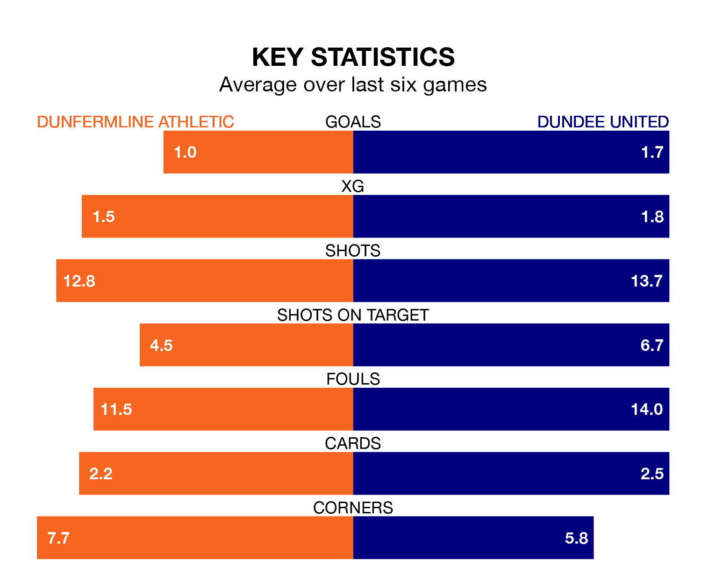

Relegation candidates Dunfermline Athletic face a challenge against high-flying Dundee United at KDM Group East End Park on Friday.
Dunfermline Athletic are seventh in the Championship table, and have picked up eight wins and eight draws in their 28 games to date.
The Terrors, meanwhile, are top of the standings with 58 points, having won 17 and drawn seven.
With 55 goals in 28 games so far this season, Dundee are the league's highest scorers with 2.0 goals per game. And they are conceding fewer than average, letting in 17 goals at a rate of 0.6 per game.
Dunfermline, meanwhile, are below average scorers, with 1.1 goals per game, compared to a league average of 1.4. They have conceded 1.4 goals per game.
With Jack Walton between the sticks, United can rely on one of the league's safest pair of hands. He has kept 15 clean sheets in his 28 appearances this season, and no 'keeper has prevented the opposition scoring more often in the Championship.
In Athletic's net, Deniz Mehmet has four clean sheets in 21 games. He has conceded a goal every 71 minutes, more than twice as often as the 158 minutes between goals for Walton.
In the last 10 years, Dunfermline and Dundee have played each other on 21 occasions. Dunfermline won two of them, Dundee 14, and they drew five times.
On average, Dunfermline scored 0.6 goals and the Terrors 1.5 in those matches.
Their last meeting was on January 27, when they played out a 0-0 draw.
The hosts are in mixed form in the Championship, with two wins and two draws from their last six games.
With three wins and a draw over that period, the Terrors' form is slightly better – they have taken 10 points from 18, compared to Dunfermline's eight.
Dunfermline's last match was on Saturday, a 2-0 loss against Raith Rovers.
Dundee beat Arbroath 4-0 last time out, also on Saturday, with Tony Watt (two), Alexander Greive and Kai Fotheringham on the scoresheet.
Friday's match will be refereed by Colin Steven, who has taken charge of six Championship games so far this season, issuing no red cards and booking 14 players. He has not awarded any penalties.
The last Dunfermline game Steven refereed was a 3-0 away loss to Partick Thistle on September 30. His last Dundee match was their 3-0 win away at Arbroath on January 2.
Updated: 15:10 (UTC), 15/03/24